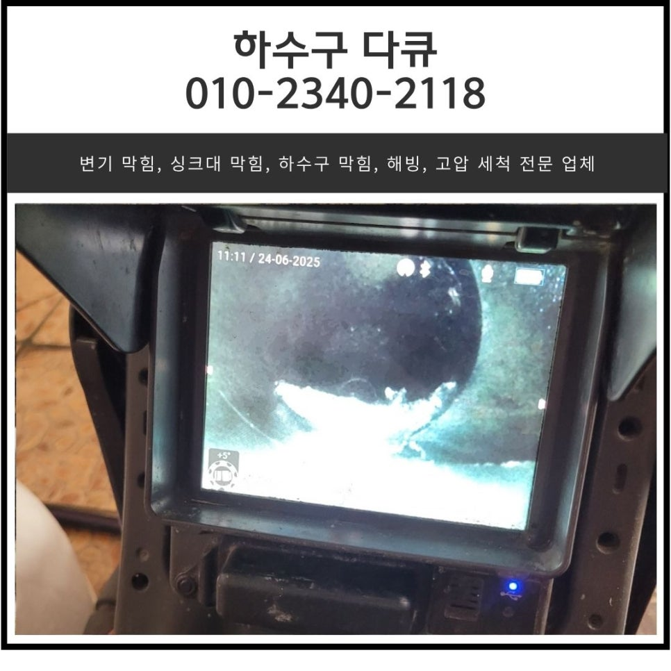
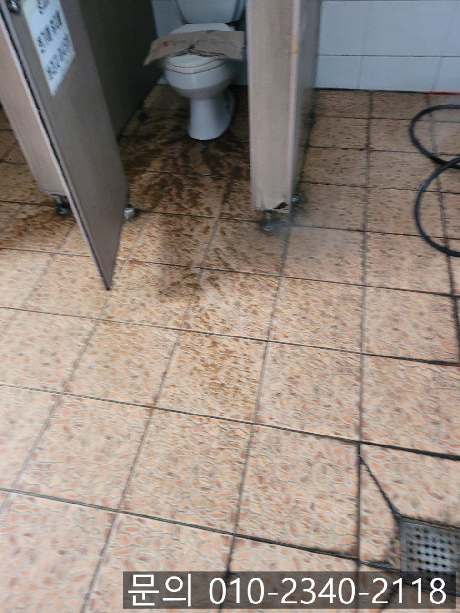
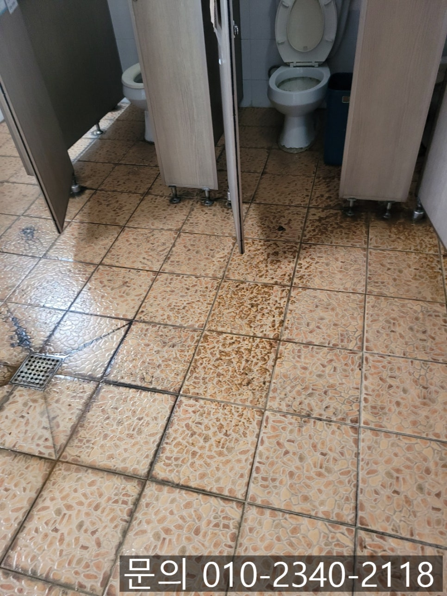
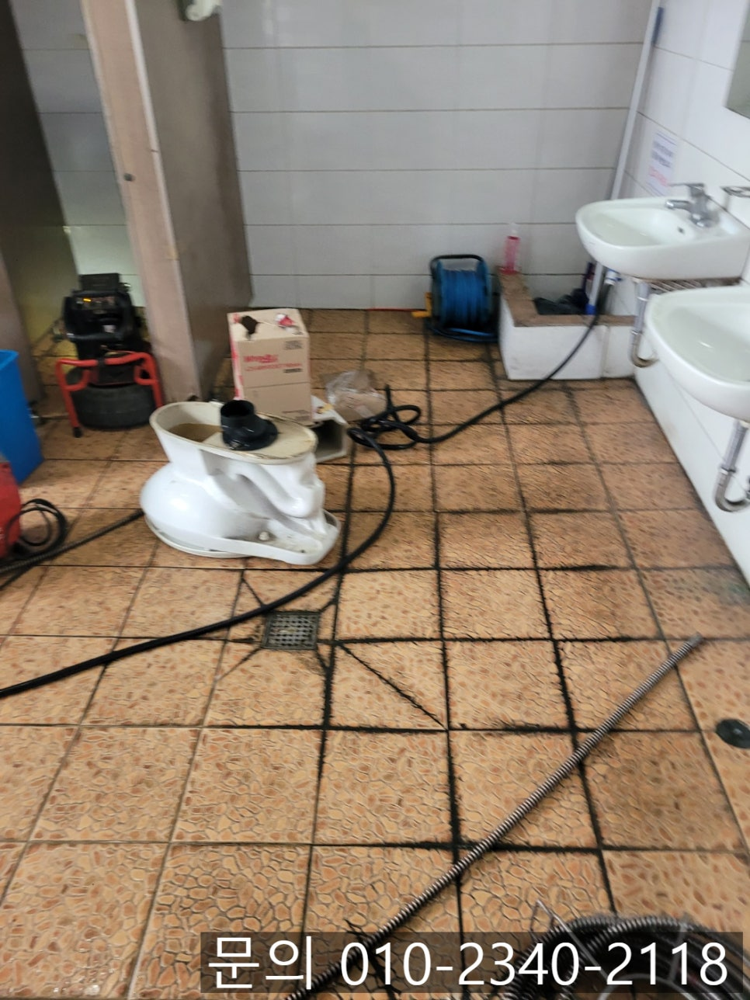
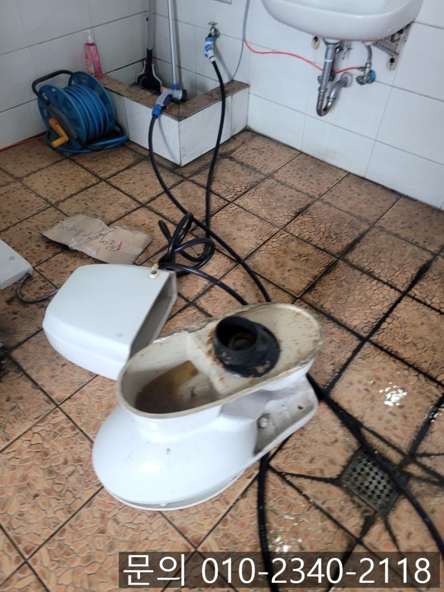
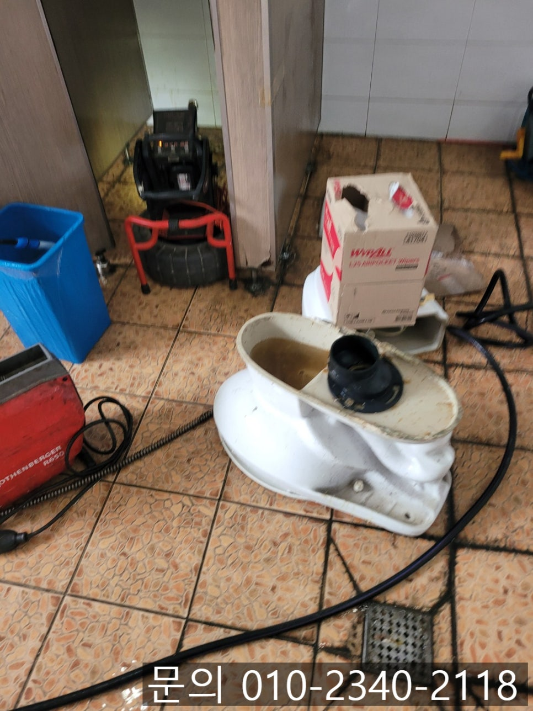
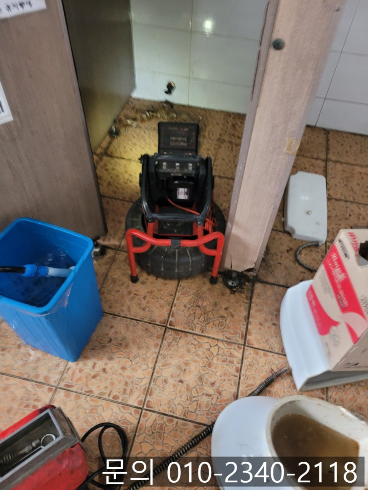

🏠 마장면 화장실 배관 막힘 이천 부발읍 물류센터 변기 역류 석회 제거 전문 업체
용인 변기막힘 전문 시공 후기

📋 작업 개요
- 위치: 용인
- 서비스 유형: 변기막힘, 하수구막힘, 배관막힘, 역류해결, 뚫는업체, 배관청소
- 작업 일시: 2025. 6. 26. 9:20
- 업체명: 하수구수사대 (010-5615-2118)
🔍 문제 상황
안녕하세요.
마장면 화장실 배관 막힘, 이천 부발읍 물류센터 변기 역류 석회 제거 전문 업체 하수구 다큐입니다.
인터넷으로 쇼핑하는 사람들이 늘어나면서 우리나라에 수많은 물류센터들이 생겨나고 있습니다.
수많은 택배를 소화하기 위해 물류센터는 하루에 수백 명 넘는 사람들이 근무하면서 물류가 이동하는 공간이에요.
그만큼 공용 화장실 사용량도 상당히 많은데요.
여러 사람들이 사용하는 화장실에서 배관에 문제가 생기게 되면 직원들이 불편해질 뿐 아니라 작업 효율까지 떨어지게 됩니다.

🔎 원인 분석
💡 전문가 진단: 정밀 진단 장비를 사용하여 슬러지의 고착 여부를 판명하고 타격/세척 작업을 실시했습니다.
특히 화장실의 변기 여러 개가 동시에 막히게 된다면 정말 끔찍하겠죠?
이천 부발읍 물류센터 변기 역류, 석회 제거 전문 업체 하수구 다큐로 작업을 의뢰한 곳은 물류센터였습니다.
문제없이 잘 사용하던 화장실에서 변기 3개가 동시에 막히고 역류하고 있다며 빨리 해결해달라고 요청하셨어요.
고객님께 물류센터의 주소를 전달받아 네비를 찍고 신속하게 현장에 달려가 보니 유선상 말씀해 주셨던 대로 변기의 물이 내려가지 않고 있는 상태였어요.
물을 내려보니 오물이 흘러내려 가기는커녕 거꾸로 역류하는 현상이 나타났습니다.
화장실에서 동시다발적으로 변기 역류가 발생하는 것은 각각의 변기 문제라기보단 공용 배관의 문제일 가능성이 매우 높아요.
그러다 보니 고객님께 상황을 설명해 드린 다음 변기를 탈거 하고 작업을 진행하기로 했습니다.

🔧 작업 과정
이때 변기를 모두 탈거할 필요는 없고 화장실 배관에서 외부로 이어지는 쪽의 배관과 가장 가까운 변기 하나만 탈거해서 작업을 하게 됩니다.
변기에서 역류까지 발생한 상황이다 보니 배관 내부에 이물질로 가득 찼을 게 불 보듯 뻔해서 전동 스프링을 이용해 구멍을 뚫는 통수 작업을 진행한 다음, 마장면 화장실 배관 막힘 현장의 변기와 연결되어 있던 오수 배관으로 내시경 카메라를 진입시켜 막힘의 원인을 파악해 보기로 했어요.
마장면 화장실 배관 막힘의 원인을 파악하기 위해 내시경 카메라가 진입하자 어렵지 않게 이물질을 확인할 수 있었습니다.
배관의 3분의 2 정도를 단단한 이물질이 막고 있는 상태로 변기에서 많은 양의 오물과 휴지, 물이 한꺼번에 내려오자 소화시키지 못하고 막혀 역류했던 것 같아요.
고객님께 배관의 상태를 보여드리면서 작업 계획에 대해 말씀드린 다음 배관 청소 작업을 진행하기로 했습니다.
이천 부발읍 물류센터 변기 역류 석회 제거 전문 업체 하수구 다큐는 플렉스 샤프트 장비를 사용하기로 했어요.
플렉스 샤프트 장비는 노즐 끝에 달려있는 체인이 배관 내부에서 360도로 강하게 회전하면서 쌓여있는 이물질을 잘게 부서 주거나 체인에 걸어 제거하는 역할을 합니다.
내시경 카메라로 석회의 위치를 파악해가며 꼼꼼하게 청소를 이어갔어요.
여러 차례 플렉스 샤프트로 반복해서 이물질을 제거하자 새것처럼 깨끗해진 것을 확인할 수 있었습니다.
탈 거했던 변기는 원래대로 복구해 드리고 테스트를 진행해도 막힘이나 역류가 없는 것까지 체크한 다음 작업을 마무리할 수 있었어요.


✅ 작업 완료
지금 변기 막힘, 하수구 막힘으로 고민하고 계신가요?
스트레스 받지 마시고 연락주세요.
시원하게 뚫어드리겠습니다.




⚠️ 하수구 배관 막힘 예방 및 관리 가이드
- ✅ 머리카락, 비닐, 물티슈 등 물에 분해되지 않는 이물질은 하수구 유입을 절대 금지해 주세요.
- ✅ 하수구 거름망을 씌우고 모여진 이물질은 주기적으로 쓰레기통에 바로 비워주셔야 합니다.
- ✅ 배관 노후가 심할 경우 이물질이 더 쉽게 걸리므로 주기적인 배관 세척(고압세척 등)을 권장합니다.
- ✅ 작업 후 1년 이내 재발 시 하수구수사대에서 무상 A/S 보증 서비스를 제공합니다.
💡 핵심 정리
- 확실한 장비 작업(내시경 점검 및 샤프트 스케일링)으로 원인을 뿌리 뽑습니다.
- 작업 후 1년 이내에 동일한 부위 재발 시 100% 무상 A/S 서비스를 보장합니다.
- 서울 · 경기 · 인천 전 지역에 24시간 언제든 긴급 출동할 수 있도록 항시 대기 중입니다.
❓ 자주 묻는 질문 (FAQ)
🚨 용인 변기막힘 문제로 고민이신가요?
정확한 원인 진단과 확실한 시공으로 재발 없는 해결을 약속드립니다.
24시간 긴급 출동 | 서울 · 경기 · 인천 전지역 | 1년 내 재발 시 무상 A/S